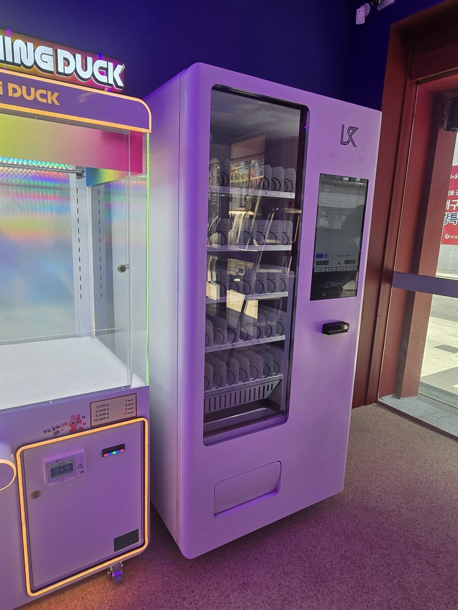

무인 뽑기방은 손님이 한 번 들어와 오래 머무는 공간입니다. 편의점처럼 지나가며 하나 사 가는 곳이 아니라, 기계 앞에 서서 몇 번씩 동전을 넣는 동안 시간이 흐릅니다. 그래서 이런 매장의 자판기는 들어올 때가 아니라 머무는 중간에 팔립니다. 자리를 고르는 기준도 거기에 맞춰야 합니다. 이번 현장은 한쪽 벽을 따라 뽑기 기계가 일렬로 서 있고, 그 줄이 끝나는 곳에서 출입문으로 이어지는 구조였습니다.
사장님이 처음 생각하신 자리는 출입문 바로 안쪽이었습니다. 들어오자마자 보이니 좋을 것 같다는 이유였는데, 이 자리는 뺐습니다. 뽑기방은 문을 여닫는 사람과 안에서 기계를 보는 사람의 동선이 입구에서 겹칩니다. 거기에 기계를 세우면 좁은 입구가 더 좁아지고, 자판기 앞에 선 사람이 문을 막습니다. 대신 잡은 곳이 사진에 보이는 기계 줄이 끝나는 벽면입니다. 안쪽을 한 바퀴 돌고 나오는 길에 자연스럽게 지나고, 앞에 두세 사람이 서도 통로가 남습니다. 그다음 본 것은 전기였습니다. 뽑기 기계는 조명과 모터를 같이 쓰는 데다 한 줄에 여러 대가 물려 있어, 같은 회로에 냉장 압축기를 더하면 부담이 됩니다. 분전반을 열어 여유 있는 다른 회로를 찾아 연결했습니다. 마지막은 수평입니다. 바닥이 카펫이라 겉으로는 평평해 보여도 발이 눌리면서 기계가 조금씩 기울 수 있어, 다리를 하나씩 돌려 잡고 며칠 뒤 다시 보기로 했습니다.
검단 무인 뽑기방에 맞는 구성
기계는 냉장 음료와 간식을 함께 넣는 자판기 한 대로 잡았습니다. 뽑기방은 음료만 두면 아깝습니다. 오래 서 있다 보면 목도 마르지만 출출해지기도 하는데, 근처에 편의점이 있으면 손님이 나갔다가 안 돌아옵니다. 그래서 탄산과 이온음료, 생수 칸을 위쪽에 두고 아래 칸을 젤리·초콜릿·과자처럼 한 손으로 먹을 수 있는 간식으로 채웠습니다. 뽑기 기계를 조작하면서 먹을 수 있어야 하므로 부스러기가 많이 나거나 손에 묻는 품목은 뺐습니다.
결제는 카드와 삼성페이·카카오페이·네이버페이를 받게 했습니다. 뽑기방을 찾는 손님은 10대와 20대 비중이 높아 현금을 거의 쓰지 않습니다. 현금함을 넣지 않으니 수금하러 들를 일도, 밤사이 현금함이 털릴 걱정도 없어집니다. 금액대는 1,000원대에서 2,000원 안쪽으로 맞췄습니다. 뽑기에 이미 돈을 쓰고 있는 손님이라 음료값이 비싸면 손이 멈춥니다. 재고는 앱으로 어떤 칸이 비었는지 밖에서 보고 채우러 갑니다. 무인으로 돌리는 매장이라 사람이 상주하지 않으니, 품절 알림이 뜨는지를 설치 당일에 사장님 휴대폰으로 같이 확인했습니다.
뽑기방 자판기, 좋은 점과 어려운 점
좋은 점은 체류 시간이 길다는 것입니다. 손님이 머무는 시간이 길수록 음료가 팔릴 기회도 늘어납니다. 특히 밤에 강합니다. 무인 뽑기방은 늦게까지 문을 열어 두는 곳이 많은데, 그 시간대에는 주변 가게가 대부분 닫혀 있어 안에 있는 자판기가 사실상 유일한 선택이 됩니다. 이미 무인으로 돌아가는 매장이라 운영 방식이 바뀌지 않는 것도 장점입니다. CCTV와 원격 관리가 이미 깔려 있고, 사장님이 하루 한 번 들러 보는 흐름에 자판기 채우는 일만 얹으면 됩니다. 뽑기 기계는 한 대 더 들이려면 자리와 비용이 크게 들지만, 자판기는 벽 한 칸만 비면 들어갑니다.
어려운 점도 그대로 적겠습니다. 첫째는 쓰레기입니다. 매장 안에서 마시고 먹으니 빈 캔과 포장지가 남습니다. 자판기 옆에 휴지통을 반드시 같이 두셔야 하고, 없으면 기계 위나 뽑기 기계 사이에 쌓입니다. 둘째는 손님 연령대입니다. 어린 손님이 많은 매장은 기계를 흔들거나 두드리는 일이 생깁니다. 벽에 붙여 세우고 받침을 단단히 잡아 두는 편이 안전합니다. 셋째는 요일 편차입니다. 평일 낮에는 거의 팔리지 않고 금요일 저녁과 주말에 몰립니다. 유통기한이 짧은 품목을 많이 넣어 두면 주중에 그대로 남습니다. 넷째는 조명입니다. 뽑기방은 분위기를 위해 전체 조명을 어둡게 하는 곳이 많은데, 자판기 화면이 유일한 밝은 면이 되면 눈에는 잘 띄지만 상품 칸 안쪽이 어두워 보이지 않습니다. 이번에는 기계 쪽으로 조명을 하나 더 두는 것을 권해 드렸습니다.
검단 무인매장, 이런 자리가 잘 됩니다
검단은 인천 서구 북쪽, 김포와 맞붙은 지역입니다. 오래된 검단사거리 상권과 새로 들어선 검단신도시가 같이 있어 자판기 자리의 성격이 두 갈래로 나뉩니다. 첫째는 신도시 아파트 단지와 그 상가입니다. 당하동·원당동·불로동 일대는 입주가 이어지면서 젊은 세대와 아이 있는 가구가 많이 들어왔고, 단지 앞 상가에 학원·스터디카페·무인점포가 빠르게 채워지는 중입니다. 이번 현장처럼 가족 단위가 저녁에 들르는 무인매장이 잘 맞는 자리입니다. 둘째는 검단사거리 주변의 기존 상권입니다. 인천지하철 2호선 검단사거리역·마전역·완정역·왕길역·검단오류역을 따라 상가가 이어지고, 역 주변은 저녁 늦게까지 사람이 지납니다.
그 밖에 문의가 꾸준한 자리는 원룸과 오피스텔이 몰린 블록, 학원가 건물, 셀프 세차장과 주유소, 그리고 경인아라뱃길 쪽으로 나가는 길목의 가게들입니다. 검단은 아직 공사 중인 구역이 섞여 있어 같은 동네라도 블록마다 유동 인구가 크게 다릅니다. 그래서 상담 때는 주소보다 그 건물 앞을 하루에 몇 사람이 지나는지를 먼저 여쭙습니다. 김포 구래동·마산동·양촌 쪽과 서구 청라·검암 방면은 한 번 나가는 길에 같이 보는 일이 많습니다.
검단 서비스 지역
검단 — 당하동 · 원당동 · 마전동 · 불로동 · 대곡동 · 왕길동 · 오류동 · 금곡동 · 아라동 · 검단신도시 전 구역
서구 — 검암동 · 경서동 · 연희동 · 청라동 · 가정동 · 신현동 · 석남동 · 가좌동 · 공촌동
역 — 검단오류역 · 왕길역 · 검단사거리역 · 마전역 · 완정역 · 독정역 · 검암역
주요 시설 — 검단사거리 상권 · 검단신도시 아파트 단지 상가 · 경인아라뱃길 · 인천서구청 검단출장소 일대
인접 — 경기 김포(구래동 · 마산동 · 장기동 · 양촌) · 계양구 · 강화군 방면
인천 전역(중구 · 동구 · 미추홀구 · 연수구 · 남동구 · 부평구 · 계양구 · 서구 · 강화 · 옹진)과 경기 김포 · 부천까지 같은 조건으로 나갑니다.
검단 무인창업, 이렇게 시작하시면 됩니다
설치비는 받지 않습니다. 자리 확인부터 품목 구성, 기계 반입, 카드 결제 연동, 재고 채우는 방법까지 한 번에 안내해 드립니다. 뽑기방이나 무인점포처럼 이미 무인으로 돌아가는 매장은 CCTV와 출입 관리가 깔려 있는 경우가 많아, 자판기만 얹으면 되는 일이 대부분입니다. 견적 전에 확인하는 것은 전기 회로·벽면 폭·반입 경로 세 가지입니다. 상가 1층이라도 출입문 폭과 턱 높이에서 걸리는 일이 있으니 미리 재어 두시면 설치 당일에 일이 멈추지 않습니다. 자리 사진 한 장과 대략의 벽면 폭만 보내 주셔도 들어갈지 아닐지는 미리 봐 드립니다.
비용은 구입이 렌탈보다 유리한 편입니다. 렌탈료를 몇 년 내는 것보다 처음에 사 두는 쪽이 총액이 낮게 나오는 경우가 많고, 오래 쓸수록 차이가 벌어집니다. 다만 임차 기간이 짧거나 자리를 옮길 가능성이 있는 매장이라면 렌탈을 함께 비교해 보시는 편이 낫습니다. 구성별 36개월 총비용은 구입 vs 렌탈 비교 가이드에 정리해 두었습니다.
검단 무인자판기 설치 상담
세워 둘 자리 사진 한 장만 보내 주셔도 됩니다. 남는 벽과 전기 회로, 반입 경로를 보고 들어갈 수 있는 크기와 대수를 먼저 봐 드린 뒤 견적을 보내 드립니다.
※ 사진은 픽포스가 시공한 설치 사례이며, 글에 적힌 지역의 현장 사진은 아닙니다. 자판기 구성과 품목은 자리와 업종에 따라 달라지며, 무인매장 설치는 전기 회로 여유와 반입 경로, 통로 폭 확보 조건을 현장에서 먼저 확인합니다. 정확한 금액은 견적서로 안내드립니다.